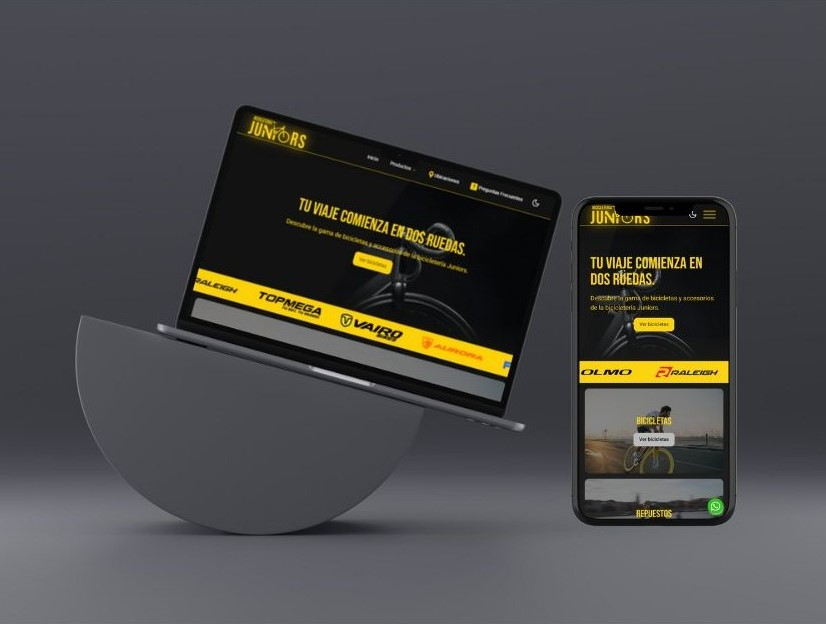

Portafolio
Proyecto "Bicicletería Juniors"
Descripción: Creación de una página web tipo catálogo para la "Bicicletería Juniors". El sitio permite a los usuarios explorar diferentes modelos de bicicletas y contactar a la tienda directamente por WhatsApp para obtener más información.
Nos encargamos de la identidad visual de la empresa, diseñando el modelo en Figma con tipografía y colores, de los cuales el cliente eligió uno. Luego, diseñamos el modelo de la página web en Figma, y tras la aprobación del cliente, procedimos con la construcción del sitio. La página muestra todas las bicicletas disponibles, y los usuarios interesados pueden enviar un mensaje por WhatsApp, donde se presentan las características del producto. Es un sistema similar a un e-commerce, pero sin método de pago implementado.
Rol: Desarrolladora Web
Herramientas: React, Figma, Tailwind, ShadCN, PHP, MySQL, Visual Studio, Git, GitHub
Resultados: Implementación exitosa de la página web con catálogo de productos y contacto directo por WhatsApp. Además, nos encargamos de la administración del pago del dominio.